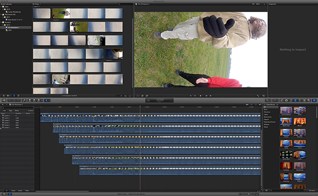

AVPan is a low-level, yet simple command-line utility that bridges the gap between LibAV and Panotools, giving a fully open source mechanism to stitch seamless panoramic video. It's not user-friendly, but it gets the job done. Familiarity with panorama stitching and command line usage is expected.
AVPan uses libavcodec, libavformat, and libswscale to open a set of video streams. It fast-forwards these streams to a common point in time and begins exporting the set of videos to a set of TIFF images using LibTIFF. For each set of TIFF images, AVPan invokes an external, user-specified utility with the TIFF image filenames as arguments. This script may then invoke the command-line utility nona to perform warping, and enblend to perform blending.
By orchestrating the synchronization and frame-by-frame export process, AVPan allows a video stitch to be performed without first exporting all videos to a series of frames. Exporting every high-definition frame from multiple simultaneous cameras will quickly consume many hundreds of gigabytes of disk space, and AVPan ensures that at most one set of HD frames need live on disk at any one moment.
Here is the source code of AVPan:
AVPan has been compiled and tested under Debian Linux and Mac OSX 10.8. Note, there has been a schism is the LibAV community and AVPan uses the LibAV versions of these libraries, not the FFmpeg versions of the same name.
The functioning of AVPan is best explained through a complete example. The example video was provided by Ken Walczak of the Adler Planetarium, collected as part of the Far Horizons project. Ken flew six GoPro Hero camera on a weather balloon to 90,000 feet over central Illinois.
In this example we'll calibrate the stitching only once, using one set of TIFF images, and use this one calibration for all frames.
Here is a stitch of the launch. The discontinuity between cameras is due to the very wide baseline of the camera mount, chosen for angular stability. This discontinuity disappears as the structure leaves the ground.
Here is a stitch of the balloon popping. Stitch discontinuities return as the flexible structure reacts to the stress.
The six cameras were not started simultaneously, and their recordings are therefore out of synchronization. The first step is to determine exactly how far out of sync they are.
To accomplish this, I loaded all six videos into Final Cut Pro X. Admittedly, FCPX is not an open source tool, but the synchronization task does not use an feature of FCPX that doesn't exist in many other video editing and playback tools. To synchronize the videos in time, I eyeballed the audio track and dragged them into rough alignment. (Click the image to enhuge.)
To optimize the synchronization, I zoomed the timeline to where I could see individual frames and centered the view on one pop in the audio. I then made fine adjustments to the video offsets in order to align that pop as closely as possible. It is not possible to perfectly align all video streams because the cameras were never in perfect frame synchronization. It is possible, however, to align them to within one frame period, in this case 33 milliseconds.
Having achieved close alignment of all streams, I looked to the frame counters in the clip window at the left and noted the position of each video stream. In this example, Camera 5 was started first, so it has a position of 0 frames and defines time zero. Camera 1 was started 1305 frames later, etc.
Camera 1 … position 1305 Camera 2 … position 4044 Camera 3 … position 3291 Camera 4 … position 2461 Camera 5 … position 0 Camera 6 … position 1924
I then moved the video forward to a point where all six cameras had a clear, detailed view of the environment from a distance, and made a note of the frame number. In this example, it is frame 11006. We will use this frame to perform the alignment.
For conveniencee, I copied all of the GoPro MPEG4 files into one directory.
$ ls -lh -rw-r--r-- 1 rlk staff 3.7G Oct 20 13:36 Cam1-1.MP4 -rw-r--r-- 1 rlk staff 3.7G Oct 20 13:37 Cam2-1.MP4 -rw-r--r-- 1 rlk staff 3.7G Oct 20 13:39 Cam3-1.MP4 -rw-r--r-- 1 rlk staff 3.7G Oct 20 13:40 Cam4-1.MP4 -rw-r--r-- 1 rlk staff 3.7G Oct 20 13:43 Cam5-1.MP4 -rw-r--r-- 1 rlk staff 3.7G Oct 20 13:44 Cam6-1.MP4
Our first task is to extract a single moment in time, frame 11006, from each of these. AVPan does this for us. Here is a simple script that runs AVPan and extracts a single frame from each video.
#!/bin/sh # Select frame number n for extraction n=11006 # Process each image separately, with a frame offset for synchronization. avpan -fcp.sh -ocam1-$n.tif Cam1-1.MP4:$(expr $n - 1305) avpan -fcp.sh -ocam2-$n.tif Cam2-1.MP4:$(expr $n - 4044) avpan -fcp.sh -ocam3-$n.tif Cam3-1.MP4:$(expr $n - 3291) avpan -fcp.sh -ocam4-$n.tif Cam4-1.MP4:$(expr $n - 2461) avpan -fcp.sh -ocam5-$n.tif Cam5-1.MP4:$(expr $n - 0) avpan -fcp.sh -ocam6-$n.tif Cam6-1.MP4:$(expr $n - 1924)
AVPan receives several parameters. The first, -fcp.sh, indicates that AVPan will execute the script cp.sh for each image.This script simply makes a copy of its given image, saving it for us.
#!/bin/sh cp $2 $1
The -ocam1-$n.tif parameter chooses the form of the output filename, where $n is filled in with the frame number.
The last parameter gives the video file name annotated with the number of the first desired frame. We know we want frame 11006, but each video starts with a different frame offset, noted above, so we use BASH expression evaluation to calculate the desired frame number.
The script takes a few minutes to synchronize the video, and AVPan reports as follows:
$ ./gen.sh Loaded Cam1-1.MP4 with size 1920x1080 Skipping Cam1-1.MP4 to frame 9701 Blending frame 0 of 1 Loaded Cam2-1.MP4 with size 1920x1080 Skipping Cam2-1.MP4 to frame 6962 Blending frame 0 of 1 Loaded Cam3-1.MP4 with size 1920x1080 Skipping Cam3-1.MP4 to frame 7715 Blending frame 0 of 1 Loaded Cam4-1.MP4 with size 1920x1080 Skipping Cam4-1.MP4 to frame 8545 Blending frame 0 of 1 Loaded Cam5-1.MP4 with size 1920x1080 Skipping Cam5-1.MP4 to frame 11006 Blending frame 0 of 1 Loaded Cam6-1.MP4 with size 1920x1080 Skipping Cam6-1.MP4 to frame 9082 Blending frame 0 of 1
Best of all, we now have six TIFF images.
$ ls -lh *.tif -rw-r--r-- 1 rlk staff 5.9M Oct 20 13:55 cam1-11006.tif -rw-r--r-- 1 rlk staff 5.9M Oct 20 13:55 cam2-11006.tif -rw-r--r-- 1 rlk staff 5.9M Oct 20 13:56 cam3-11006.tif -rw-r--r-- 1 rlk staff 5.9M Oct 20 13:56 cam4-11006.tif -rw-r--r-- 1 rlk staff 5.9M Oct 20 13:57 cam5-11006.tif -rw-r--r-- 1 rlk staff 5.9M Oct 20 13:57 cam6-11006.tif
#!/bin/sh
n=10512
./avpan -fpan.sh -ofh2-%05d.tif -n30 \
Cam1-1.MP4:$(expr $n - 1305) \
Cam2-1.MP4:$(expr $n - 4044) \
Cam3-1.MP4:$(expr $n - 3291) \
Cam4-1.MP4:$(expr $n - 2461) \
Cam5-1.MP4:$(expr $n - 0) \
Cam6-1.MP4:$(expr $n - 1924)
We must now align these six images. This can be a laborious process. This example shows a uniform overcast gray sky, a uniform green expanse of grass, and some uniform brown unplanted fields. There is not nearly enough detail for an automatic alignment to be performed. I did this one by hand. PT GUI and Hugin are more-or-less equally well-adapted to the task. Here is an in-process alignment in Hugin:
One the alignment is complete, PT GUI will save the project to a pts file or Hugin will save it to a pto file. Both of these files have similar content and format, though they are not exactly the same. A bit of hand-editing with a common text editor will extract the information necessary for nona to do its work. Here is the final calibration file for this example:
p f3 w4096 h4096 v200 m g1 i0 o w1 h1 y0 r0 p0 v97.34222212824423 a-0.03947273477025521 b0.1633557302623208 c-0.4295021588785936 f0 d-44.01437701332227 e24.49280503481016 g0 t0 o w1920 h1080 f0 y54.66799653124257 r-146.2801039942396 p-47.42169363500343 v=0 a=0 b=0 c=0 d=0 e=0 g=0 t=0 o w1920 h1080 f0 y31.41494263564297 r-64.30833159055062 p52.26233324315966 v=0 a=0 b=0 c=0 d=0 e=0 g=0 t=0 o w1920 h1080 f0 y-60.83527267940244 r30.24661234923959 p42.66039686306758 v=0 a=0 b=0 c=0 d=0 e=0 g=0 t=0 o w1920 h1080 f0 y-57.732102612096 r178.1287933918707 p-5.683139425791278 v=0 a=0 b=0 c=0 d=0 e=0 g=0 t=0 o w1920 h1080 f0 y63.86812917656463 r-5.464064687655901 p10.67504750648678 v=0 a=0 b=0 c=0 d=0 e=0 g=0 t=0 o w1920 h1080 f0 y-37.74676500413466 r121.5315838358511 p-57.12977880600381 v=0 a=0 b=0 c=0 d=0 e=0 g=0 t=0
The first line, beginning with p gives the final image width and height plus the field of view in degrees. The m... I have no idea. The o lines are important. Each specifies an input image along with the transformation necessary to warp it into the right shape. PT GUI Pro, which is what I used to generate this calibration, specifies global transforms separately from per-image transforms, so we end up with seven images, the first of which doesn't really exist.
Finally we have everything we need to stitch the video. We will run AVPan again, this time to extract and process all of the desired frames. We begin at frame 10300, which occurs just before the baloon is released. We'll take 1800 frames, which is one minute of video at 30Hz. After this point, Ken's balloon enters the overcast and there's nothing to see for a few minutes.
#!/bin/sh
n=10300
./avpan -fpan.sh -ofh2-%05d.tif -n1800 \
Cam1-1.MP4:$(expr $n - 1305) \
Cam2-1.MP4:$(expr $n - 4044) \
Cam3-1.MP4:$(expr $n - 3291) \
Cam4-1.MP4:$(expr $n - 2461) \
Cam5-1.MP4:$(expr $n - 0) \
Cam6-1.MP4:$(expr $n - 1924)
Unlike the single frame extraction above, we specify all six videos on one single AVPan command line. AVPan will extract each frame as a set of six TIFF files and pass them to the pan.sh script, which looks like this:
#!/bin/sh nona -o out -m TIFF_m farhorizons2.pto dummy.jpg $2 $3 $4 $5 $6 $7 enblend --no-optimize --fine-mask -o $1 out0001.tif out0005.tif out0002.tif out0003.tif out0004.tif out0006.tif
The first thing that pan.sh does is invoke nona using the calibration pto file shown above. The -o out argument tells it to write the warped images to files named “out.” The file name arguments list all of the TIFF file names provided by AVPan, but also a tiny white JPG image (included in the AVPan source) that allows nona to correctly handle PT GUI's global transformation specification without failing due to a missing image.
After the warping was been performed and written to six TIFF files named “out,” enblend performs the blending, writing the output to a finished file named and numbered fh2-00000.tif, as provided by AVPan.
Now we have 1800 TIFF files, each 4096 × 4096. This output consumes a lot of disk space, which is why it was necessary to utilize temporaries during the stitching process. To make a movie out of these 1800 frames, we can simply use FFmpeg, QuickTime, Final Cut, or any other movie-making tool.
Whew, that was a lot of work.
kooima@csc.lsu.edu